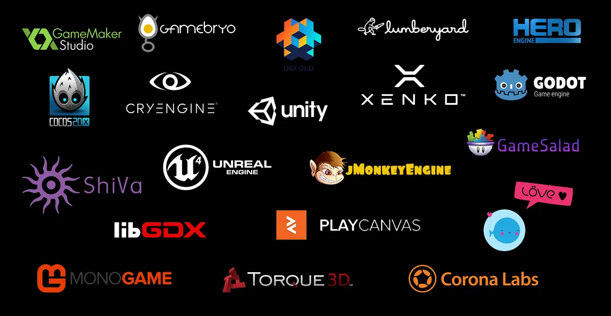

What Is a Game Engine?
Game Engines are software frameworks used to develop video games primarily with built in tools to help developers like asset libraries, animation tools, audio engines, collision engines, and a lot more features.
There are always benefits to making your own game engine from scratch, but game engines serve as a solid starting place for any and all developers. The three main Game Engines used today are Unity, Unreal Engine, and Godot, all of which have their own pros and cons.